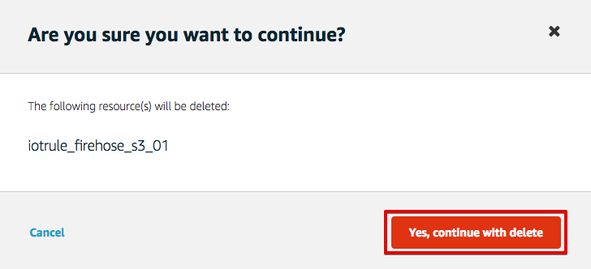
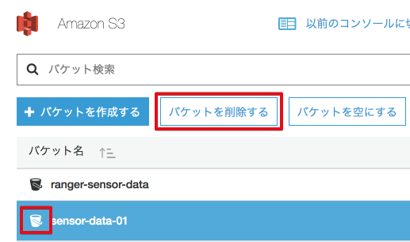
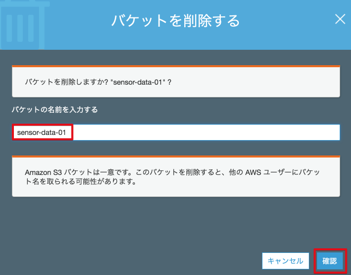
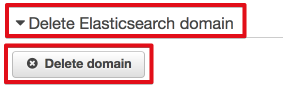
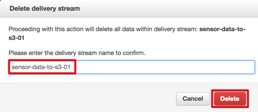

8. ハンズオン終了後¶
ハンズオン終了後には以下の設定を削除してください。
8.1. AWS IoTのリソースを削除¶
AWS IoTの証明書、ポリシー、デバイスを削除するためには、削除前にアタッチされているリソースをデタッチする必要があります。（ルールは他のリソースとの関連性はありません）
- マネージメントコンソールのサービスから[AWS IoT]を選択します。
- 削除したい証明書を選択します。
- 関連付けられているデバイスを選択し、[Detach]をクリックします。
- 同様にポリシーもデタッチします。

- 削除したいリソース(Certificate, Thing, Policy)を選択し、”Actions”のメニューから”Delete”を選択します。
Ruleも同様に削除します。

ワーニングが出ますが、[Yes, continue with delete]をクリックして削除して下さい。
AWS IoTのCloudWatchログを有効にしている場合、無効にします。 Settingsをクリックし、CloudWatch Logsの[Disable]をクリックして無効にして下さい。

8.2. S3バケットを削除¶
マネージメントコンソールのサービス一覧から[S3]をクリックして開きます。 リストからバケット”sensor-data-<参加者番号>”のアイコンをクリックして選択します。[バケットを削除する]をクリックして下さい。
確認画面が表示されますので、”バケットの名前を入力する”にバケット名を入力して、[確認]をクリックして下さい。
8.3. ElsticSearch Serviceの設定を削除¶
マネージメントコンソールのサービス一覧から[ElsticSearch Service]をクリックして開きます。 Domain”firehose-to-es-domain-<参加者番号>”をクリックします。

画面の下までスクロールし、”Delete Elasticsearch domain”をクリックすると、[Delete domain]ボタンが表示されるので、クリックします。
確認画面が表示されますので、”Delete the domain ....”のチェックを入れ、[Delete]ボタンをクリックします。

8.4. Lambda関数を削除¶
マネージメントコンソールのサービス一覧から[Lambda]をクリックして開きます。Lammbda関数 ranger-raw-data-to-json-<参加者番号>をチェックし、[アクション]から、”関数の削除”を選びます。確認画面が表示されるので[削除]をクリックします。

8.5. Kinesis Firehoseの設定を削除¶
マネージメントコンソールのサービス一覧から[Kinesis]をクリックして開きます。[Firehose コンソールに移動]をクリックし、Kinesis irehoseの設定画面に移動します。
S3 Delivery Streamsから、sensor-data-to-s3-<参加者番号>をチェックし、[アクション]から、”Delete”を選びます。確認画面が表示されるので[削除]をクリックします。

確認画面が表示されるので、delivery stream 名を入力し、[Delete]をクリックします。ElasticSearch Delivery Streamsも同様の方法で削除します。
8.6. IAMロールを削除¶
firehose_delivery_role_es-<参加者番号> IOT_to_Kinesis_Firehose-<参加者番号> firehose_delivery_role-<参加者番号> lambda_KinesisFirehoseAccess-<参加者番号>